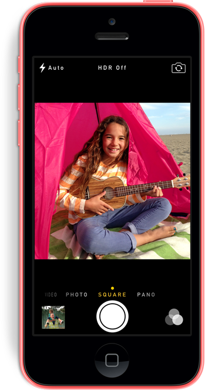

手机改变了我们的生活
苹果、三星、索尼这些智能手机品牌，相信大家都不会感到陌生。
1876年，贝尔发明了电话；1973年，出现了第一台手机。
它们的出现，给人类带来了通讯的方便，使远隔重洋的人在拨
起手机时的一瞬间听到远方亲朋熟悉的声音，正所谓“天涯若比邻”。
如今，随着科技的迅速发展，手机不再只是一个普通的通讯工具，
手机的使用范围、功能更加广泛，人们可以用它在线聊天，
看电影，看小说，看新闻，玩游戏、娱乐等等。

手机给我们的好与坏
走在大街上，你会发现，百分之八十的人的口袋里都会有一台 智能手机，有的人还一边走一边玩手机，撞到电线杆等障碍物的事 故更是时有发生；很多餐厅、咖啡厅的店门前都会有这么一段话， “内有无线网络”，许多人和朋友来到餐厅里，并不是和朋友聊天 ，而是“低头看手机。”

我们应该理性的对待手机
科技的发展迅速，智能手机的功能广泛，影响并改变着人类的 生活，它方便了人类，也侵害者人类。我们应当扬其利，避其害， 合理、科学地使用手机。